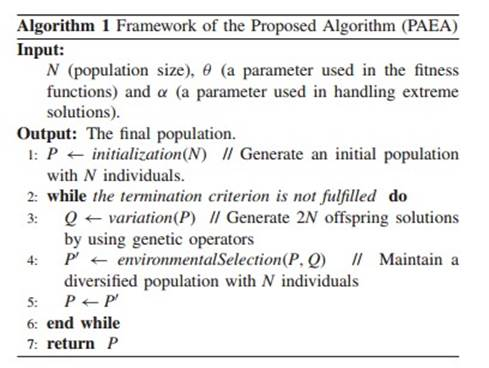
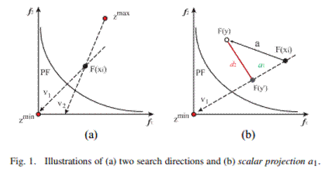
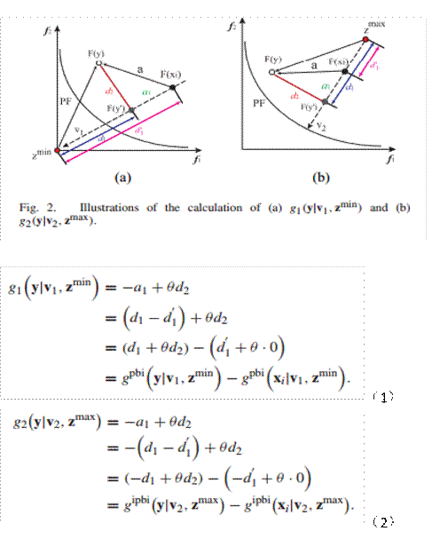
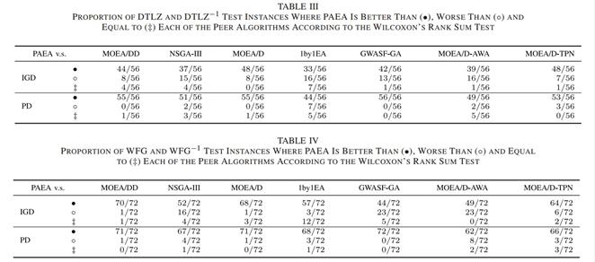

A Scalar Projection and Angle-Based Evolutionary Algorithm for
Many-Objective Optimization Problems
Yuren Zhou , Yi Xiang, Zefeng Chen , Jun He, Senior Member, IEEE, and Jiahai Wang, Member, IEEE
在基于分解的多目标进化算法中，权重向量的设置以及标量化函数中的参考点（即理想
点或最低点）的选择对算法的性能具有重要意义。基于分解的算法，即 MOEA/DD、NSGA-III、 THE-DEA 和 RVEA，需要预先定义用于多样性维护的一组权重向量或参考点。然而，一方面，如何在高维目标空间中设置权重向量和参考点仍然是一个悬而未决的问题。另一方面，基于分解的算法的性能强烈地依赖于 PFs 的形状，但是在很多时候权重向量的分布形状与 PFs 的形状不一致。因此，Yuren Zhou 和 Yi Xiang 等人于 2018 年在 TEEE transactions on cybernetics 上发表的论文 A Scalar Projection and Angle-Based Evolutionary Algorithm for Many-Objective
Optimization Problems 提出了一种新的分解多目标优化同时使用自适应搜索方向和两个参考点。由于本人能力有限，如果分享过程中疏漏了重要工作，还请大家不吝赐教与指正。 本文算法的大体框架：
本文的基于标量投影和角度的进化算法（PAEA）的框架如算法 1、在基于标量投影和角度的进化算法（PAEA），除了种群规模 N 之外，还有两个附加参数和分别用于适应度函数和极端解的处理。首先，在整个决策空间（算法 1 中的第 1 行）对种群 P 初始化 N 个个体。然后，对于种群 P 中的每个个体 x，从整个种群中选择随机个体，通过将遗传算子（交叉和变异）应用到 X 和 X’，我们两个后代。所有的后代都存储在群体 Q 中（算法 1 中的第 3 行）。由于每一个父代一次生成两个后代，这将消耗的评价是每一代的群体规模的两倍。最后，采用环境选择的方法从 P 和 Q 中选择 N 个多样化个体（算法 1 中的第 4 行）。

对于本文的创新点如下：
本文主要改进是在环境选择阶段，对其选择策略进行改进。
1）同时使用两个参考点，即（图 1）中的理想点zmin 和最差点zmax ，论文 1 和 2 介绍了这两个参考点方法。在本文的算法中，搜索是通过理想点来拉动当前点，同时远离最差点。由于理想点的使用与最低点的互补作用，使得在处理凸和凹 PFs 时都是有效的（图 1）。

2）用两个适应度函数同时评价每个解。本文将论文 1 和论文 2 中的方法结合，这样基于两个参考点和每个父个体的两个搜索方向（图 2），用公式 1 和公式 2 两个适应度函数上同时评估子解（或相邻解），这两个适应度函数为两个基于惩罚的边界相交函数 PBI 和 IPBI 函数，在每个适应度函数上去寻找最佳的解。

3）使用自适应搜索方向，来有效地处理不规则PFs问题。
4）由于在开始进行遗传操作时会有 2N 个个体，因此在进化最后需要一个消除程序来修剪种群，以便为下一代保留精确的 N 个解。本文提出基于角度的方法去选择 N 个解，对极端解处理和非极端解消除，选择最优解的同时，使得收敛性和多样性达到平衡。 与其他算法比较结果：
1）本文运用IGD收敛性指标和PD多样性指标来比较，通过和MOEA/DD, NSGA-III,
MOEA/D, 1by1EA, GWASF-GA, MOEA/D-AWA, 和 MOEAD-TPN，在收敛性和多样性上
都有了很大的改进，综合性能有了较大的提升（表3）。

启发：本文在环境选择阶段用了MOEA\D里面的标量优化的思想以及角度来优化多样性的方法。PAEA 算法 1）使用自适应搜索方向，来有效地处理不规则 PFs 问题；2）PAEA使用两个具有不同参考点的适应度函数来区分个体，从而充分利用超理想和最差点互补效应来正确地处理凹和凸PFS的问题。3）本文用到基于角度的聚类方法。PAEA 的一个潜在缺点是它目前只考虑理想点的距离作为逐个消除解的收敛度量。对于收敛度量上的改进或许可以结合最差点的距离。对于高维多目标问题可以在偏序关系、多样性选择机制和解决收敛与多样性平衡等方面进行改进。
1、Q. Zhang and H. Li, “MOEA/D: A multiobjective evolutionary algorithm based on decomposition,” IEEE Trans. Evol. Comput., vol. 11, no. 6,pp. 712–731, Dec. 2007.
2、 H. Sato, “Inverted PBI in MOEA/D and its impact on the search performance on multi and many-objective optimization,” in Proc. Annu. Conf. Genet. Evol. Comput., Vancouver, BC, Canada, 2014, pp. 645–652.